DOMAIN 1
SECURITY AND RISK MANAGEMENT
The first CISSP domain focuses on the fundamentals of security and how to assess and manage risk. You will learn the concepts of the CIA triad, gain insight into core organizational roles and how they relate to security, and understand the important difference between accountability and responsibility, in addition to corporate laws (policies) and key processes like risk analysis. This domain also focuses heavily on the key factors of governance and compliance, and how security helps by being aligned and contributing to each.
1.1 Understand, adhere to, and promote professional ethics
1.1.1 ISC2 Code of Professional Ethics
As a CISSP candidate, you are responsible for understanding and complying with the ISC2 Code of Professional Ethics, which applies to CISSP holders around the globe. In fact, the CISSP exam will most likely ask at least one question on this topic. The Code of Ethics Preamble and Canons are noted below. It is important that the Preamble and the Code of Professional Ethics Canons be understood fully in the context of corporate and industry application, and the Canons should be memorized and adhered to in the order presented.
ISC2 Code of Ethics Preamble
 The safety and welfare of society and the common good, duty to our principals, and to each other, requires that we adhere, and be seen to adhere, to the highest ethical standards of behavior.
The safety and welfare of society and the common good, duty to our principals, and to each other, requires that we adhere, and be seen to adhere, to the highest ethical standards of behavior.
Therefore, strict adherence to this Code is a condition of certification.
Agreement with and strict adherence to this code is a condition of gaining and maintaining the CISSP certification. The ISC2 Code of Ethics consists of the Canons outlined in Table 1-1.
Wording and order of the ISC2 Code of Ethics Canons
|
ISC2 Code of Ethics Canons |
|
|
1 |
Protect society, the common good, necessary public trust and confidence, and the infrastructure. |
|
2 |
Act honorably, honestly, justly, responsibly, and legally. |
|
3 |
Provide diligent and competent service to principals. |
|
4 |
Advance and protect the profession. |
Table 1-1: ISC2 Code of Ethics Canons
How to apply Ethics Canons in various scenarios and contexts
In both the Preamble and the Canons, the topics are in order of importance, and again, all these items should be memorized as presented. Remember, if a scenario is presented in which there's a conflict in the Canons, they need to be applied in order.
1.1.2 Organizational Code of Ethics
CORE CONCEPTS |
|
|
|
Ethics are a foundational element to a successful security program and should be adhered to throughout the organization. The success of any security program requires the proper ethical support from every level of the organization and therefore needs to be driven by management and instilled through proper support, direction, and enforcement through high-level management. Proper ethical behavior is based upon one belief: abide by the rules and do nothing that is harmful to anyone else. However, this belief comes in the form of a challenge: Though almost every professional follows some form of ethics, they tend to vary widely due to upbringing, culture, education, life experiences, religious beliefs, and so on. Thus, most people will pursue a course of action-a course of ethical behavior-based upon what they believe is ethically correct. So, although ethical behavior can help promote a good and secure working environment, there are likely a wide variety of ethical lenses forming the work landscape, especially in a large organization. How, then, can ethical behavior be pursued in a consistent manner to ensure that all employees employ the same set of ethics?
Within an organization, the best way to prescribe, promote, and instill consistent ethical behavior is through the use of corporate rules or laws, more appropriately referred to as policies. Policies that promote sound and consistent ethical behavior help make an organization a better place to work and more valuable to shareholders and to the communities where they operate. Policies must be legal, and adherence to and promotion of them must start with senior management and be consistently communicated to every employee.
1.2 Understand and apply security concepts
CORE CONCEPTS |
|
|
As outlined in the introduction, the role of security has evolved to become more fully integrated with business processes. For example, for many years, the IT or Information Security function didn't consider physical security to be part of their purview. However, there are a lot of physical assets that an organization owns that don't strictly relate to data-like people-that need protection. Security focuses on anything that represents value, better referred to as assets, and implements controls that ultimately increase the value of those assets. Security should not focus only on information, or data, as this is just one example of assets that represent value to organizations and therefore need to be protected based on that value.
In summary, the focus of the security function is to:
1. Allow and enable the organization to achieve its goals and objectives
2. Increase the organization's value
Security, therefore, is in a support role. Through proper security governance, those who are accountable for increasing the value of the organization can be supported and enabled to achieve their goals.
1.2.1 Confidentiality, Integrity, Availability, Authenticity, and Nonrepudiation
CORE CONCEPTS |
|
|
|
|
|
Definitions of Confidentiality, Integrity, Availability, Authenticity, and Nonrepudiation
Figure 1-1 depicts a classic security model known as the CIA triad. The CIA triad is a foundational model that helps organizations design, structure, and implement the security function.
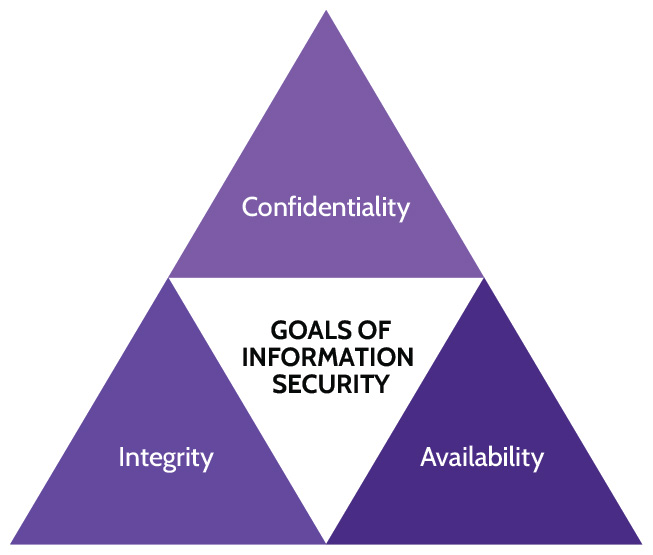
Figure 1-1: CIA Triad
The elements of the CIA triad are outlined in Table 1-2:
|
Confidentiality |
Protects assets using important principles such as need-to-know and least privilege; prevents unauthorized disclosure |
|
Integrity |
Protects and adds value to assets by making them more accurate, more timely, more current, more meaningful; prevents unauthorized or accidental changes to assets such as information |
|
Availability |
Protects critical assets based on value to ensure organizational assets are available when required by stakeholders |
Table 1-2: CIA Triad
These are the core pillars of security, and, even though referred to as the goals of information security, this is a narrow view of what security needs to focus on today. The goals of the three pillars-Confidentiality, Integrity, and Availability-need to be applied to information and everything else (assets) that represents value to the organization. In other words, security and the core pillars should be referred to as the "goals of asset security" and not just "the goals of information security."
The traditional pillars of security have been increased to include authenticity and nonrepudiation, outlined in Table 1-3. Together with the CIA triad, we often refer to these as the five pillars of information security.
|
Authenticity |
Proves assets are legitimate and bona fide, and verifies that they are trusted and verified. Proves the source and origin of important valuable assets. Also referred to as "proof of origin." |
|
Nonrepudiation |
Provides assurance that someone cannot dispute the validity of something; the inability to refute accountability or responsibility. Also, inability to deny having done something. |
Table 1-3: Authenticity and Nonrepudiation
1.3 Evaluate, apply, and sustain security governance principles
1.3.1 Alignment of the Security Function to Business Strategy, Goals, Mission, and Objectives
CORE CONCEPTS |
|
|
|
|
|
The word governance can be defined as the act of governing or overseeing the process of directing something. In other words, governance means to govern properly to allow the organization to achieve its goals and objectives focused on increasing the value of the organization. Those activities can be referred to as corporate governance activities, and examples may include creating new processes, new products, new services, striking new relationships with third parties, improving margins and cash flow, creating new systems and procedures, reducing risk, meeting compliance requirements, and so on. All of these are just a few examples of corporate governance activities that organizations will implement/create to increase value.
Security governance will therefore include all those activities, initiatives, and programs that the security function will drive, initiate, and support, which should always be aligned, focused, and contributing toward those corporate governance activities mentioned above that will ultimately increase the value of the organization. The important point to remember is that this alignment can only be assured in a top-down structure. Those who are accountable for corporate governance activities need to be the ones who drive what security needs to do, to ensure alignment and proper contribution from security to add value and ultimately achieve the goals and objectives of the organization.
Security should be a proactive enabler rather than a reactive function, but this requires senior management to have strong convictions about the need for security. If there is a lack of support, and lack of conviction on management's part, what do you do? You could educate and convince them of the value of security via an internal champion or perhaps even via the hiring of external consultants.
Security needs to enable the organization's goals and objectives, not just enforce information processes or fix technical issues. Security governance must align with corporate governance, and security's goals and objectives should be driven by the organization's goals and objectives.
To best understand what is meant by the terms corporate governance and security governance, it is important to first understand what is meant by the term governance. At the heart of the word governance is govern, which means "to lead;" but, for what purpose does governance exist? When officials are elected to government, whether at the local, state, national, or federal level, what are they being elected to do? Ultimately, they're being elected to enhance or increase the value of whatever jurisdiction they will govern by providing better services and better meeting the needs of their constituents. Extending this definition, organizations need people to govern too, with the goal of increasing the value of the organization. Just like every country has officials who are elected to provide for the people and the country itself-in other words, to provide governance-organizations need a similar structure. Who are the members of the governing body of any organization? Typically, this would be the Board of Directors, the CEO, and senior management; their goal is to increase the value-the prosperity, the sustainability, and the viability-of the organization.
Instead of enacting things like local and municipal laws, organizations enact corporate laws called policies that allow the organization and its stakeholders to thrive. The Board of Directors should establish the organizational goals and objectives and set the tone for governance, but it can't necessarily oversee the continuous monitoring and proper implementation of the elements related to these principles. This is why the Board usually appoints an individual to be accountable for corporate governance. This individual-the CEO-therefore becomes directly accountable for corporate governance, or all the activities and initiatives that the organization undertakes to achieve its goals and objectives.
Extending the top-down perspective, it follows that security in any organization is only as good as its leadership; in other words, for security to be effective and for employees to be committed to the need for good security, the Board, CEO, and senior management must adopt, promote, and consistently communicate a security culture.
Aligning security governance with corporate governance
Security governance can be best aligned with corporate governance when it draws on the knowledge and experience of senior and upper management, HR, Legal, IT, and key functional areas of the organization. Specifically, based upon the expertise from functional areas like Legal, for example, security can know which laws and regulations need to be followed by the organization. The best way any organization can establish and maintain sound organizational governance that aligns with security is through the establishment of an Organization Governance committee, charged with establishing and promoting the top-down governance structure and tone that is critical to an organization achieving its goals and objectives. This committee should meet regularly and include security goals and objectives in its organization. Put simply, the goals and objectives of the security function must be directly aligned with the goals and objectives of the organization.
Scoping and tailoring
Scoping and tailoring are important processes to ensure controls are properly aligned with organizational goals and objectives
Scoping looks at potential control elements and determines which ones are in scope-for example, security control elements that could adhere to applicable laws and regulations-and which ones are out of scope. In other words, based on the previous example, those security elements that best align with and support the goals and objectives of an organization from a legal perspective would be considered in scope.
Tailoring looks specifically at applicable-in scope-security control elements and further refines or enhances them so they're most effective and aligned with the goals and objectives of an organization. This is done from the perspective of each functional area. They should be cost-effective in relation to what they're protecting, and they should ultimately help add value to the organization. When done well, security governance is completely aligned with corporate governance, and the goals and objectives of an organization can be fulfilled in a manner that is cost-effective and adds value.
If the Board of Directors and senior management don't support the security function, security simply becomes a reactive nuisance versus a proactive enabler.
Starting from the top, if the Board and senior management are convicted-absolutely convinced-of the need for robust security that is aligned with the strategy, goals, mission, and objectives of the organization, the security function will be viewed as a great asset and an organizational enabler.
As was mentioned earlier with regards to governance, the CEO is ultimately accountable for guiding the organization and helping it achieve its goals and objectives in order to add value. However, as the roles and responsibilities listed above allude to, accountability can exist elsewhere within an organization. For example, the CFO often is accountable for the accuracy of financial reports, and the Data Controller is accountable for privacy.
1.3.2 Organizational Processes
Security needs to be an integral part of all organizational processes. One example that requires special consideration is during acquisitions of other companies. Organizations face increased risk during acquisitions and mergers, because they have limited visibility and control over the other organization being acquired. Similarly, if an organization goes through the process of divestiture and sells off some of its assets, the sales process needs to ensure that the organization's security, compliance, and other obligations are not compromised. Governance committees that include a focus on security can play a vital role in protecting organizations during these periods.
Accountability versus Responsibility
CORE CONCEPTS |
|
|
|
|
At this point, it is important to understand the difference between two very important terms that are sometimes mistakenly used interchangeably: accountable and responsible. These two words do not share the same meaning. The word accountable was used earlier very deliberately. How does being accountable differ from being responsible? If someone is accountable for something, that accountability can never be delegated to anyone else. That person will always remain accountable. Responsibility, on the other hand, can be delegated, but the delegator will remain accountable. This explains why security is everyone's responsibility, yet the accountability for security remains with those who are focused on corporate governance-the Board, the CEO and other C-level members, and the owners of assets. If something that negatively impacts value happens in an organization, the CEO is ultimately accountable.
From a functional point of view, delegating responsibilities to the right person or team makes perfect sense and is usually the most effective and efficient means by which an organization achieves its goals and objectives. It's important to know and understand the difference between accountability and responsibility. Table 1-4 highlights the major differences between them:
|
Accountability |
Responsibility |
|
Where the buck stops |
The doer |
|
Ultimate ownership and liability |
In charge of a task or process |
|
Only one person or group can be accountable |
Multiple people can be responsible |
|
Sets rules and policies |
Develops plans and implements controls |
Table 1-4: Accountability and Responsibility
Accountability vs. responsibility
Even if certain functions of the organization are managed by a responsible third party, like a payroll or Cloud Service Provider (CSP), accountability still resides with the owner of the assets being managed. To expand on this thought, because it's more and more applicable these days due to the prevalence of cloud-based computing, the owner of any and all data stored in the cloud is accountable for that data. A CSP will often have a contractual-based responsibility for protecting the data, but the owner of the data is always accountable for the data and therefore liable if there is a data breach.
Who is ultimately accountable for security? Upper management, the CEO, or the Board of Directors?
Ultimately, the individuals accountable for every single asset in the organization are the Board and the CEO. Senior management are also accountable for the assets that they manage. This is important, because it's obviously not practical for the CEO to be accountable for every single asset in a large company. On the CISSP exam, if a question asks who is ultimately accountable for the finance system, the best answer would be the VP of Finance-but if they aren't listed, the next best answer is the person above them in seniority. Accountability can never be delegated.
What accountability does the security function hold? The security function is accountable for security governance activities that have been driven or initiated by those who are accountable: the Board, the CEO, other C-suite executives, and upper management.
1.3.3 Organizational Roles and Responsibilities
CORE CONCEPTS |
|
|
|
Table 1-5 outlines some of the key functions typically found in an organization and their accountabilities and responsibilities from a security perspective.
|
Owners / Controllers/ Functional Leaders / Senior Management |
Accountable for:
|
|
Information Systems Security Professionals / IT Security Officer |
Responsible for:
|
|
Information Technology (IT) Officer |
Responsible for:
|
|
IT Function |
Responsible for:
|
|
Operator / Administrator |
Responsible for:
|
|
Network Administrator |
Responsible for:
|
|
Information Systems Auditors |
Responsible for:
|
|
Users |
Responsible for:
|
Table 1-5: Roles and Accountabilities/Responsibilities
In Domain 2 (section 2.3-Provision Information and Assets Securely), additional roles and responsibilities will be covered specific to information security, including: Data Owner/Controller, Data Processor, Data Custodian, Data Steward, and Data Subject.
One of the roles described in Domain 2-Custodians-is often confused with Owners (mentioned in Table 2-3). Where does the word custodian originate? The word custodian comes from the word custody, and it follows that custodians are people or functions that have custody of an asset that does not belong to them; custodians are caretakers or users. The asset belongs to an owner, but the custodian is entrusted with it and is responsible for protecting the asset while it's in their custody. In this case, protect means to ensure that the asset's value is not negatively impacted. For example, related to database access, a custodian is responsible for ensuring that the database is available to the users or applications that need access to it; or, regarding confidential assets, a custodian is responsible for ensuring that information is not divulged that might negatively impact the asset's value.
However, what about a situation where, for example, a custodian is responsible for protecting an asset-data, for instance-and the asset becomes corrupted and unusable? Who is responsible? Who is accountable? Referring back to Table 1-4, the responsibility for the corruption rests with the custodian. However, accountability for the corruption rests with the asset owner. In other words, referring to points made earlier, it's critical that owners manage their accountability well and ensure that custodians are equipped to manage their responsibility well. Custodians can only take care of this responsibility if security helps. For a custodian to protect the assets in their custody, the right tools, architecture, security controls, knowledge, and skills must exist and be in place. The asset owner is accountable for ensuring this, and this is achieved through the support that the security function should provide.
Who provides all these tools? The security function. The security function performs two critical tasks: 1) makes it easy for custodians and users to perform their job while accessing assets and 2) security enables and equips owners to protect assets in the most efficient, cost-effective way possible.
Who is accountable for what? Who is responsible for what?
Who is specifically responsible for security? Everyone.
Everyone has some degree of responsibility for security in their role; for example, the janitor of a locked building must make sure they're not taking confidential papers off someone's desk and that they're disposing of confidential recycling properly. However, asset owners are accountable for telling people what their responsibilities are. Asset owners are in the best position to know the value of the assets they control, and they can best determine how much security is needed to protect those assets. They also need to communicate what should be protected, who should protect it, and how to do so. Security professionals provide advice, but it's not up to them to secure anything. Security is ultimately everyone's responsibility.
Security frameworks, which will be discussed in more detail later, provide guidelines on how to align the security function with corporate governance. Frameworks like NIST, ISO, COBIT, ITIL, and more will be described more fully. For now, it's important to know that security frameworks provide comprehensive guidance on how to structure security properly.
Before moving to the matter of compliance with laws and regulations, let's examine another key component of security management embodied in two phrases: due care and due diligence.
1.3.4 Security Control Frameworks
Most of these topics are discussed in section 3.3.1 Security Control Frameworks. SABSA is briefly discussed in 3.2.2 Enterprise security architecture.
1.3.5 Due Care versus Due Diligence
CORE CONCEPTS |
|
|
Table 1-6 details the basic principles surrounding due care and due diligence.
|
Due Care |
Due Diligence |
|
Accountable protection of assets based on and aligned with the goals and objectives of the organization This definition aligns what security should be doing with what the organization should be doing. It aligns accountable protection of assets based on the goals and objectives of the organization. This is what due care means from a security perspective. |
Ability to prove due care to stakeholders-upper management, regulators, customers, shareholders, etc. Due diligence is what is done to prove due care on a regular basis to organization stakeholders. |
Table 1-6: Due Care vs. Due Diligence
Definitions of due care and due diligence as they relate to security
Consider penetration testing as a representative example. Due care would be the owner of a system requesting that a penetration test be performed and then authorizing the remediation of the vulnerabilities identified by the penetration test. Due diligence would then be providing proof that the vulnerabilities were addressed in a cost-effective and efficient way to management and other relevant stakeholders (e.g., customers).
1.4 Understand legal, regulatory, and compliance issues that pertain to information in a holistic security context
1.4.1 Cybercrimes and Data Breaches
Due to the importance of information security, every organization should be asking fundamental questions like:
How is/are our information/assets protected?
What are the issues pertaining to information security for our organization in a global context?
What does the current threat landscape look like?
It's important for organizations to understand the threat landscape, especially the current cybercrime trends. These insights can help organizations better deploy security and other defense-related resources in the most effective manner. Not every attack can be prevented, but effective security strategies can reduce attacks by making them:
Not worthwhile
Too time-consuming
Too expensive
Bottom line: Don't be the low-hanging fruit that can be easily picked! As a security professional, it's important to implement effective security measures. Additionally, the security function needs to work with the compliance and legal functions to understand legal and regulatory issues in a global context because these could factor into how security is developed. Security professionals must understand global threats to their organization and respond in a manner that acknowledges them.
1.4.2 Licensing and Intellectual Property Requirements
CORE CONCEPTS |
|
What do trade secrets, patents, copyrights, and trademarks protect?
Intellectual property is any intangible product (invention, formula, algorithm, literary work, song, symbol, etc.) of the human intellect that the law protects from unauthorized use by others. Intellectual property laws (outlined in Table 1-7) help protect intellectual property assets with the goal of encouraging the creation of a wide variety of intellectual goods. Though intellectual property laws and regulations vary quite a bit from country to country, the basic premises remain the same, as noted in Table 1-7.
|
Protects |
Disclosure Required |
Term of Protection |
Protects Against |
|
Trade Secret |
Business information |
No |
Potentially infinite |
Misappropriation |
|
Patent |
Functional innovations Novel idea/inventions |
Yes |
Set period of time |
Making, using, or selling an invention |
|
Copyright |
Expression of an idea embodied in a fixed medium (books, movies, songs, etc.) |
Yes |
Set period of time |
Copying or substantially similar work |
|
Trademark |
Color, sound, symbol, etc. used to distinguish one product/company from another |
Yes |
Potentially infinite |
Creating confusion |
Table 1-7: Intellectual Property Laws
1.4.3 Import/Export Controls
Import and export controls are country-based rules and laws implemented to manage which products, technologies, and information can move in and out of those countries, usually meant to protect national security, individual privacy, economic well-being, and so on.
The Wassenaar Arrangement
Encryption is a powerful technological tool that can have immense value, but it can also pose a significant threat if it gets into the wrong hands. Cryptography is heavily used in the context of military and government agencies. In the United States, organizations like the National Security Agency (NSA) actively seek to deduce cryptographic keys to decrypt and understand secret communications of governments around the world in an effort to keep the country safe. As a result of the inherent value and potential threat that cryptography represents, global laws and regulations restrict the use of cryptography; and, in many cases, import/export restrictions to certain regions exist. These laws and regulations often pertain to the sales of weapons, but they also pertain to the underlying technology-computers, network infrastructure, and more-that can be used to develop military systems.
The Wassenaar Arrangement was put in place to manage the risk that cryptography poses, while still facilitating trade. It allows certain countries to exchange and use cryptography systems of any strength, while also preventing the acquisition of these items by terrorists.
Participating members can exchange cryptography of any strength, but countries that are not a member are excluded from data exchange.
International Traffic in Arms Regulations (ITAR)
This is a US regulation that was built to ensure control over any export of items such as missiles, rockets, bombs, or anything else existing in the United States Munitions List (USML) (https://www.ecfr.gov/current/title-22/chapter-I/subchapter-M/part-121) [note that this URL is case sensitive, so if you are typing it in, make sure to capitalize the "I" and "M"]. The responsible agency is the US Department of State, Directorate of Defense Trade Controls (DDTC).
Export Administration Regulations (EAR)
EAR predominantly focuses on commercial-use related items like computers, lasers, marine items, and more. However, it can also include items that may have been designed for commercial use but actually have military applications. The responsible agency is the US Department of Commerce, Bureau of Industry and Security (BIS).
1.4.4 Transborder Data Flow
CORE CONCEPTS |
|
|
|
Challenges associated with sharing data across international borders
Many countries have enacted laws commonly referred to as transborder data flow regulations, data residency regulations, and data localization laws. These require that specific data remain within the country's physical borders.
These laws primarily relate to personal data. The idea is to protect a country/state/province/region's citizens' personal data. If an organization is collecting citizens' data, then they are accountable for the protection of that data. As privacy laws and the protection of personal data vary significantly around the world, this has prompted the creation of these transborder data flow laws. If a country/state/province/region has strong privacy laws, then they may wish to prevent personal data from being stored or processed in other countries/states/provinces/regions that may have weaker laws. Hence, transborder data flow laws prevent personal data from leaving the physical borders of a country/state/province/region.
Given these laws, organizations must consider the potential implications of the flow of data across physical borders. This can be very challenging to organizations to keep track of with the proliferation of service providers and global cloud services.
General Data Protection Regulation (GDPR), enacted in May 2018, is a great example of a data residency regulation that specifically requires that personal data of European Union citizens be stored and processed only within the physical borders of the European Union.
1.4.5 Issues Related to Privacy
CORE CONCEPTS |
|
|
In the context of asset protection and security, it might seem odd to include this topic. In fact, the topic of privacy is very relevant, especially in today's globally connected world. Information that is collected from clients and visitors to websites could be considered very valuable-perhaps as much or more valuable than other organizational assets. If personal information is disclosed as the result of a breach or carelessness, it harms both the individual to whom that personal data refers to and the value of the information itself. Additionally, the organization could face significant fines or damage to corporate reputation. Depending on the nature of the business and industry, the organizatikn may not recover or even survive. Therefore, regardless of the value, it's essential that personal data is well protected to comply with current privacy laws and to protect the value of the information and of the organization itself.
This can become complex for multinational krganizations since there's a significant variation around the world in both the definition of personal data and the laws that determine how to protect it. When dealing with personal data, organizations must tread carefully and work closely with their legal departments to identify all the applicable laws and regulations. After consulting with the legal department, it is the security function's responsibility to make sure that the correct controls are in place to achieve privacy. To have privacy, you need security.
Definition of privacy
Let's consider the topic of privacy. First, what's the definition of privacy? Privacy is the state or condition of being free from being observed or disturbed by other people.
This is a fundamental concept in privacy laws around the world, based upon the premise that if an organization is allowed to collect personal information, that information might be used in an unauthorized manner or such that causes harm. This explains why privacy laws like Europe's GDPR are becoming more and more common around the globe, and they apply to both government and private business organizations. Generally, privacy laws around the world have, and continue to, become more stringent and more restrictive, requiring the perfect implementation of security controls to ensure compliance.
A very important question that comes to mind is, who and what is impacted if personal data (also referred to as Personally Identifiable Information, or PII) is disclosed? Certainly, the individual to whom the personal data refers is affected. Additionally, the value of the organization that allowed the disclosure is also affected. This could be in the form of significant fines, liability, loss of corporate reputation, or any combination thereof. The organization may not be able to sustain these operations, depending on the industry and sector in which they have activities. For example, imagine how difficult it would be for an incident response company to be able to offer their services after being the subject of a breach. As such, it's essential that personal data is well shielded to comply with current privacy laws and to protect the value of the information and the overall value of the organization itself.
Personal Data
Depending on the location in the world, personal data may be referred to in different ways, and what constitutes personal data can vary significantly. Figure 1-2 contains the various categories of sensitive data types, like PII, PHI, and IP.
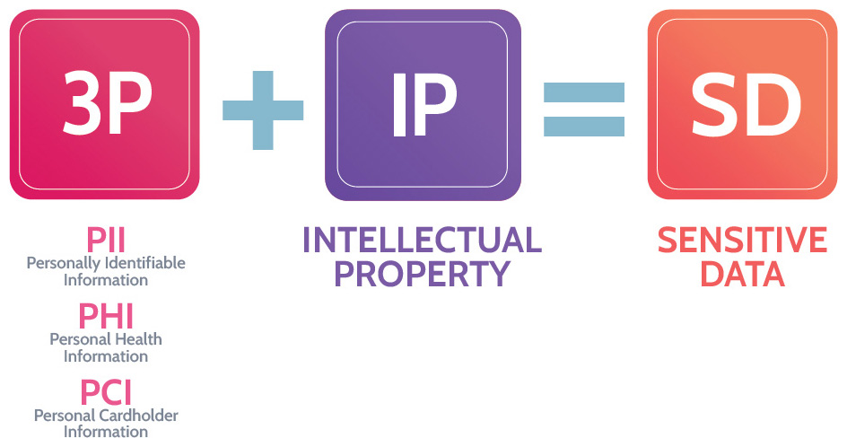
Figure 1-2: Personal Data Types
The simplest definition of personal data is data that can be used on its own or in combination to identify an individual. Personal data can be referred to as:
PI-Personal Information
PII-Personally Identifiable Information
SPI-Sensitive Personal Information
PHI-Protected Health Information
How is personal data defined in a little more detail? As noted above, the definition of personal data varies quite significantly around the world. In the context of one privacy law or regulation in one part of the world, a telephone number might be considered personal data; in a different context, perhaps not. The same is true for IP addresses, email addresses, and many other types of information. For example, consider the difference between a business and a personal phone. A business phone would need to be known to prospective clients, while a personal phone would not. The same is true for IP addresses, email addresses, and many other types of information. There is no perfect definition of personal data, because it varies significantly around the world, and this points to the notion of direct and indirect identifiers.
Direct identifiers include information that relates specifically to an individual, such as their name, address, biometric data, government ID, or other uniquely identifying number.
Indirect identifiers include information that on its own cannot uniquely identify an individual but can be combined with other information to identify specific individuals, including, for example, a combination of gender, birth date, geographic indicators, and other descriptors. Other examples of indirect identifiers include place of birth, race, religion, weight, activities, employment information, medical information, education information, and financial information.
In general, these definitions clearly describe each type of identifier. However, as a security professional, it's important to communicate with the legal team to be absolutely clear about what constitutes personal data and what jurisdictions and regulations apply. This approach allows everybody in the organization to be on the same page, and for the proper security controls to be implemented. Some examples of direct, indirect, and online identifiers are outlined in Table 1-8:
|
Direct |
Indirect |
Online |
|
|
|
|
Table 1-8: Categories of Identifiers
Privacy Requirements
CORE CONCEPTS |
|
 General Data Protection Regulation (GDPR) principles
General Data Protection Regulation (GDPR) principles
Organization for Economic Cooperation and Development (OECD) principles
Role of supervisory authority
Privacy Policy Requirements
Everyone deserves a reasonable expectation of privacy. When someone enters personal details at the doctor's reception area or when booking a hotel room and providing credit card details, they expect their data to be adequately protected.
Along the same lines, companies must adhere to agreements and controls that comply with applicable laws and regulations. Table 1-9 contains a summary of the key roles within the privacy realm, while Table 1-10 summarizes some key privacy regulations in different countries.
|
Data Owners |
Owners need to have clearly defined accountabilities including:
Different types of owners:
Companies that collect personal data about customers are accountable for the protection of the data. |
|
Data Custodians |
Need to have clearly defined responsibilities Protect data based on input of the owners. Custodians also need tools, training, resources, etc. And who provides all this? Typically the owners. |
|
Data Processors |
Need to have clearly defined responsibilities. Processes personal data on behalf of the controller / owner. |
|
Data Subjects |
Individual to whom personal data relates |
Table 1-9: Data Owners, Custodians, and Processors
|
GDPR |
|
|
United States |
|
|
Canada |
|
|
China |
|
|
South Africa |
|
|
Argentina |
|
|
South Korea |
|
|
Australia |
|
Table 1-10: Privacy Regulations in Different Countries
The list above illustrates just a few of the privacy laws around the world, and the requirements in these laws vary from country to country. You are not expected to be a privacy expert for purposes of the CISSP exam; but as a security professional you should understand that privacy cannot be achieved without security. Security must be involved in implementing the required security controls to achieve the required privacy requirements.
One privacy law that you should have a slightly deeper understanding of is GDPR. The reason is that GDPR is considered by many to be the bellwether for privacy laws in countries around the world. GDPR is one of the most comprehensive privacy laws in the world, and many countries have modeled, or are in the process of modeling their privacy laws on GDPR or plan to in the future. Some of the basic information you should know about GDPR is listed in Table 1-10: Privacy Regulations in Different Countries.
For multinational organizations, it can be quite complex and challenging to keep track of the varying privacy requirements around the world. In response to this problem, the Organization of Economic Cooperation and Development (OECD) has created guidelines that offer a simple set of principles that organizations can use to structure their privacy practices.
OECD Privacy Guidelines
The Organization for Economic Cooperation and Development (OECD) is an international organization that is focused on international standards and policies, and finding solutions to social, economic, and environmental challenges. One such challenge that they have been driving for decades is privacy.
Working with its member states, OECD has developed guidelines that would help to harmonize national privacy legislation and, while upholding such human rights, would also prevent interruptions in international flows of data. OECD represents a consensus on basic principles that can be built into existing national legislation or serve as a basis for legislation-those countries that do not yet have adequate privacy legislation. These guidelines have consistently been updated to reflect new requirements as technology has advanced.
Are the OECD guidelines mandatory for organizations to comply with? No, usually they're considered a prudent course of action. This is precisely how the OECD Guidelines should be viewed. They are intended as suggestions, as common "best practices" related to privacy and conducting business, regardless of the location around the globe. In other words, the OECD Guidelines can be useful to organizations, as they can provide guidance on how to achieve compliance to privacy requirements. Does this mean a perfectly implemented privacy program, based on the OECD Guidelines, is compliant everywhere? No, but following those guidelines is likely to meet most requirements in a given locale. However, it's not a replacement for reviewing the specific laws and regulations you need to follow. Security professionals can use the guidelines as a starting point for the fundamental security controls organizations should put in place. Once they've done so, it's still necessary to consult with legal experts about the specific laws and regulations they need to comply with, depending on the country in which they are operating. Subsequently, specifics related to that jurisdiction can be considered further for inclusion. OECD's privacy guidelines can be seen in Table 1-11.
|
Collection Limitation Principle |
Limit the collection of personal data to only what is needed to provide a service, obtain the personal data lawfully and, where appropriate, with the knowledge or consent of the data subject. |
|
Data Quality Principle |
Personal data should be relevant, accurate, and complete, and it should be kept up to date. |
|
Purpose Specification Principle |
The purposes for which personal data is collected should be clearly specified at the time of collection. |
|
Use Limitation Principle |
Personal data should only be used based on the purposes for which it was collected and with consent of the data subject or by authority of law; in other words, if an organization says it has collected personal data for a specific purpose, they should only use the personal data for that purpose. |
|
Security Safeguards Principle |
Personal data should be protected by reasonable security safeguards against loss, unauthorized access, destruction, use, modification, etc. Essentially, security controls must be put in place, because privacy is unattainable without security. |
|
Openness Principle |
The culture of the organization collecting personal data should be one of openness, transparency, and honesty about how personal data is being used and in what context. |
|
Individual Participation Principle |
When an individual-data subject-provides personal data to an organization, that individual should have the right to obtain their data from the data controller as well as have their data removed. In other words, the individual should have the chance to participate or choose whether to share their personal information or withhold it. The term data subject refers to the individual to whom the personal data pertains. |
|
Accountability Principle |
A data controller should be accountable for complying with the other principles. What this basically means is that an organization that collects personal data is now accountable for the protection of that information. |
Table 1-11: OECD Privacy Guidelines
Privacy Assessments
CORE CONCEPTS |
|
What is a PIA/DPIA?
How often does a PIA/DPIA need to be conducted?
With the protection of privacy becoming more important with each passing day, requirements calling for privacy and Data Protection Impact Assessments (DPIA) have become equally important. In fact, Article 35 of the GDPR legislation includes a provision for Data Protection Impact Assessments (DPIA) and outlines when they're required and how they should be carried out. Additionally, ISO/IEC 29134:2017 describes a process on privacy impact assessments (PIA) and a structure and content of a PIA report. The NIST Technology Innovation Program includes information about PIAs. The European Data Protection Board, other organizations, trade groups, and independent businesses and vendors have and will continue to provide guidance, tools, checklists, and templates.
What is a privacy impact assessment?
A Privacy Impact Assessment (PIA) is a process undertaken on behalf of an organization to determine if personal data is being protected appropriately and to minimize risks to personal data as appropriate. Any system that processes personal data could be included in a PIA. Like many other risk management processes, a PIA is not a one-time assessment. Rather, it should be performed each time it's necessary, especially when risk represented by personal data processing operations has changed. Additionally, along with the assessment of risks, accompanying mitigation measures should be included.
Why are they important?
A PIA is performed with a goal to:
1. Identify/evaluate risks relating to privacy breaches
2. Identify what controls should be applied to mitigate privacy risks
3. Offer organizational compliance to privacy legislations
Privacy/Data Protection Impact Assessment Steps
There are no all-inclusive templates for conducting a PIA/DPIA, but the steps outlined in Table 1-12 summarize the core elements of a PIA/DPIA.
What are the steps required to conduct a PIA?
Privacy Impact Assessment Steps
|
1. Identify the need for a DPIA |
Use legislative guidelines, like GDPR, European guidelines, federal and state laws, industry regulations, etc. to determine if a DPIA is required. If any doubt exists, it's best to err on the side of caution and conduct an assessment. |
|
2. Describe the data processing |
This involves two steps. The first step answers questions such as:
The second step considers information gathered via questions like those mentioned earlier and further defines the purpose-the what, how, and why-of data processing activities as they relate to the goals of the project. |
|
3. Assess necessity and proportionality |
Data processing activities should always correlate with what is actually required for the goals and objectives of a project. The DPIA should confirm this is the case, and this can be done by answering questions such as:
|
|
4. Consult interested parties |
As part of any DPIA, several key parties should be consulted, including the data protection officer, project stakeholders, and data subjects (or their legal representatives). |
|
5. Identify and assess risks |
This step is critically important and likely the most important component of the DPIA, as it involves thoroughly assessing risks to personal data. While some risks might be project dependent, key considerations with any project should include asking:
|
|
6. Identify measures to mitigate the risks |
Once risks associated with a project have been identified, it's imperative that corresponding steps to mitigate those risks be identified and implemented, based upon the cost-effectiveness of doing so. Additionally, this is where a defense-in-depth approach that involves the use of complete controls should be utilized to:
|
|
7. Sign off and record outcomes |
After risks and associated mitigation steps have been identified, all details should be documented and signed off on by relevant parties that could include the data protection officer, senior management, process and project stakeholders, and data subjects. |
|
8. Monitor and review |
A PIA should be performed when necessary, especially when risk represented by personal data processing operations has changed. This fact points to the need for ongoing monitoring and review of operations, processes, and all facets of a business that involve handling of personal data. |
Table 1-12: PIA/DPIA Core Elements
Additionally, Article 35 of the GDPR offers the minimum features of a DPIA:
The assessment shall contain at least:
1. a systematic description of the envisaged processing operations and the purposes of the processing, including, where applicable, the legitimate interest pursued by the controller;
2. an assessment of the necessity and proportionality of the processing operations in relation to the purposes;
3. an assessment of the risks to the rights and freedoms of data subjects; and
4. the measures envisaged to address the risks, including safeguards, security measures, and mechanisms to ensure the protection of personal data and to demonstrate compliance with this regulation considering the rights and legitimate interests of data subjects and other persons concerned.
1.4.6 Contractual, Legal, and Industry Standards and Regulatory Requirements
CORE CONCEPTS |
|
|
Establishing the right security controls isn't just about the internal needs of an organization. There is a plethora of contractual, legal, industry, and regulatory requirements that should inform how different assets are protected-also referred to as compliance requirements. Table 1-13 shows how an organization can determine compliance needs and requirements by defining the most common compliance requirements an organization would need to consider.
|
Laws |
|
|
Regulations |
|
|
Industry Standards |
|
|
Import/Export Controls |
|
|
Transborder Data Flow Regulations |
|
|
Assets |
|
|
Personal Data |
|
|
Corporate Policies |
Table 1-13: Compliance Requirements
The legal, privacy, and audit/compliance functions must work together to ensure compliance, which requires the drive and initiative that security will ultimately design and implement as security controls. The compliance function will monitor compliance, the security function will advise on and enforce controls, and legal and privacy functions will determine organizational compliance needs. As a security professional, it's important to understand what the organization needs to be compliant with and what controls must be in place to adhere to these requirements. This implies that security must know what compliance needs exist, and the best resource to identify and understand these compliance needs is usually the legal function.
Once management understands compliance needs, they can work with security to implement controls. A big part of implementing the right controls is having the right roles and responsibilities defined, to determine who is accountable and who is responsible. Certain people within an organization are going to be accountable for the protection of personal information; many others are going to be responsible for it. Owners need to have clearly defined accountabilities related to compliance, including:
Defining classification
Approving access
Retention and destruction
1.5 Understand requirements for investigation types (i.e., administrative, criminal, civil, regulatory, industry standards)
We discuss the various investigation types in Domain 7 (section 7.1.7).
1.6 Develop, document, and implement security policies, procedures, standards, baselines, and guidelines
CORE CONCEPTS |
|
|
|
|
|
|
|
Earlier, it was discussed in detail how security must be aligned with organizational goals and objectives. A top-down approach that incorporates a governance committee to help design policies is required. The committee, reporting to the Board of Directors and CEO, should develop an overarching security policy that is aligned with organizational goals and objectives that covers the entire organization and clearly articulates the goals and objectives of the security function. Policies, as we've already briefly touched upon earlier, are corporate laws that reflect the goals and objectives of the organization. They dictate and communicate management's intentions. The overarching security policy is critical, as it sets the tone and helps create the culture necessary for effective organizational security to exist. This policy must be communicated from the CEO, or even the Board of Directors, to be most effective and impactful. It also needs to be consistently communicated and demonstrated by those at the top of the organization.
Who should write policies and who owns policies?
How often should policies be reviewed?
How are policies implemented through standards, procedures, baselines, & guidelines?
The overarching policy should be very simple. It needs to be communicated by the CEO and will clearly spell out how the CEO and organization is accountable for protecting all assets that represent value to the organization-that the CEO and upper management are ACCOUNTABLE, but also that EVERYONE in the organization is RESPONSIBLE for security and protecting the value of assets. The CEO must clearly communicate this and remind the entire organization on a regular basis. If this is done, it creates the proper culture and tone that security needs to be an enabler to the organization. It also ensures that everyone understands the importance of security and that it is everyone's responsibility.
If this is done properly, the security function is seen as an enabler and helper, as opposed to the traditional view of security as an obstacle-where the business goes to be told they can't do something.
Specific functional security policies will flow from the overarching policy. Functional security policies include standards, procedures, baselines, and guidelines that outline how to enact them. While policies don't need to be reviewed every year, standards, procedures, baselines, and guidelines may need to be updated frequently. Any combination of these elements will typically be put in place to support functional policies; together, the compendium of functional policies will be defined, supported, and informed by many standards, procedures, baselines, and guidelines.
Therefore, let's take a close look at a model for creating and maintaining security policies in an organization as depicted in Figure 1-3.
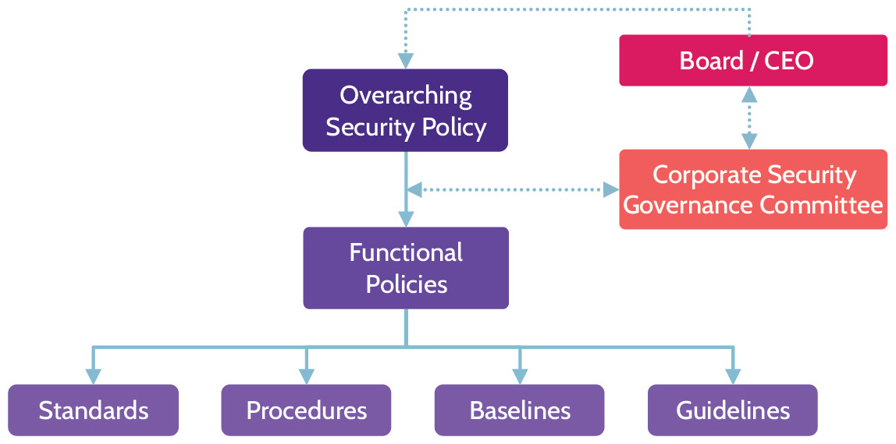
Figure 1-3: Security Document Hierarchy
An organization might have a policy, created and owned by the Security Governance Committee, mandating the use of anti-malware software. Functional policies would then need to be developed that dictate exactly how to enact that policy. Those functional policies might include a standard to specify the version of anti-malware software to use, a procedure to outline the steps to install it, and a guideline to suggest ideal goals for anti-malware efforts, such as heuristics in anti-malware software where possible. Each type of supporting document works together to ensure the policy is met.
Differences between policies procedures, baselines, and guidelines
Identifying when something provided relates to a procedure, policy, baseline, or guideline
The success of this model depends on each person performing their role well and supporting functional policies that make sense to the company. If the Board or CEO are unwilling to lead, failure from the top could follow. In our example, this might mean that although an organization would benefit from an anti-malware policy, the Board or CEO may not be working with security to create one. Similarly, if the supporting elements of functional security policies are not considered properly, implementation of security could fail. Thus, it's important that all facets of the model be carefully considered when developing and implementing it.
Many companies have very different definitions of policies, standards, procedures, baselines, and guidelines-but there are industry standards for what each of these documents are meant to be used for. Knowing the precise definition of these standards-outlined in Table 1-14-will help you use them properly.
|
Policies |
|
|
Standards |
Specific hardware and software solutions, mechanisms, and products Examples
|
|
Procedures |
Step-by-step descriptions on how to perform a task; mandatory actions Examples
|
|
Baselines |
Defined minimal implementation methods/levels for security mechanisms and products Examples
|
|
Guidelines |
Recommended or suggested actions Examples
(Note: Guidelines allow an organization to suggest something be done without making it a hard requirement and thus cause a negative audit finding) |
Table 1-14: Policies, Standards, Procedures, Baselines, and Guidelines
1.7 Identify, analyze, and prioritize business continuity (BC) requirements
See Domain 7 (section 7.11) to read about these topics in depth. The information for 1.7.1 is covered in 7.11.3 Business Impact Analysis (BIA), while 1.7.2 External dependencies is discussed in 7.11.1.
This section addresses the importance of a BIA (Business Impact Analysis) as part of the overall Business Continuity Management processes of an organization. It also highlights the importance of understanding external dependencies, but is better addressed in domain 7 when we discuss the entire business continuity management process and the involvement of security as part of that process. For now, here is a brief overview of each topic:
BIA (Business Impact Analysis)
A BIA analyzes the consequences of a disaster to an organization and allows the organization to understand priorities and gather the information needed to develop recovery strategies.
External Dependencies
As part of business continuity management of an organization, it is important to understand the external factors that can impact the criticality of valuable functions and processes within the organization. As part of the BIA process, a company needs to map out the inter-dependencies between their critical functions, processes, assets, applications, systems, etc., as well as others that are outside of their control, such as suppliers, vendors, and other third parties.
1.8 Contribute to and enforce personnel security policies and procedures
CORE CONCEPTS |
|
|
Dealing with potential violations identified in a security assessment
Dealing with employee terminations and resignations
Employee duress
Personnel Security Policies
Companies need clearly documented and communicated personnel security policies that are implemented through procedures, to address the needs related to the use and protection of valuable assets of the organization. Some of the best practices for protecting the business and its important assets are listed below. These best practices all have to do with how people and the organization work together to support the business.
1.8.1 Candidate Screening and Hiring
New personnel represent a risk to security; every organization needs personnel security policies that address and mitigate this risk with the right security controls. Examples of personnel security policies and controls include background checks, access badges, ID cards, what you're allowed to bring in and out of the building, acceptable use policies, code of conduct, employee handbook, and so on.
1.8.2 Employment Agreements and Policy Driven Requirements
As part of bringing a new employee into an organization-also referred to as onboarding-company security policies, acceptable use policies, and similar agreements should be reviewed and agreed upon prior to giving a new employee their badge and any system credentials.
Over the course of an employee's time at the company, controls like "separation of duties" and "job rotation" can be used to prevent fraud or violation of organizational policy. In addition to separation of duties and job rotation, two other controls often used are "least privilege" and "need to know." These two access controls are often referred to together, and they help ensure that employees are given only the access they need to perform their job and no more.
Offboarding controls are used when an employee leaves an organization, whether through termination or resignation. Prior to an employee leaving, or in conjunction with it, user system access should be disabled, and the fact that the employee's employment is being terminated should be conveyed to all relevant parties within the organization. Usually, voluntary termination isn't too much of a security risk. However, involuntary termination is a big risk from a security perspective. If a terminated employee becomes hostile, they might be tempted to lash out by stealing or tampering with data. For this reason, involuntary termination usually needs to be handled quite differently than voluntary termination. For example, in some situations, a member from physical security might even be physically present in the HR office while the person is being terminated to escort them out of the building.
Employee Duress
An employee acting under duress may be forced to perform an action or set of actions that they wouldn't do under normal circumstances. For example, consider the scenario of a bank manager threatened by an attacker and told to open the bank's vault while held at gunpoint. In that scenario, the bank manager's life is at risk, so, acting under duress, they may give the attacker what they want. One common practice to handle these stressful situations is to have keywords that denote that an employee is acting under duress. Have you ever watched The Bourne Identity? You will notice that at some point one of the field agents calls the CIA headquarters and gives the all clear after inspecting a potentially compromised location. However, the agent in charge does a challenge-response check and expects a specific answer to be provided if the field agent is acting under duress. Training is key in these scenarios so everyone will act calmly and denote they are potentially acting under duress.
Personnel security policies should also be extended to third parties. Third parties include contractors, companies, and anybody that may have access to company assets as part of the service provided to the organization. Table 1-15 provides a list of important personnel security controls, while Table 1-16 summarizes onboarding and offboarding processes.
Personnel Security Controls
|
Job rotation |
Job rotation is quite useful to protect against fraud and provide cross training. It entails rotating staff (especially individuals in key positions), so that an individual can't commit fraud and cover it up. For example, if someone is a loans officer at a major bank and is responsible for approving loans, they can easily defraud the bank by constantly approving loans for known individuals who pass them money as a reward. However, if that individual is rotated to another role, this won't be possible. In addition, this helps the organization to build personnel redundancy. If another staff member learns how to perform the loan officer's job, this can greatly help if that individual decides to leave the company. |
|
Mandatory vacation |
Mandatory vacation is a control also used by organizations to detect fraud. Employees are required to go on vacation for a set period of time, during which time another employee can step into the role and determine if any malicious or nefarious activity has taken place or is actively taking place. |
|
Separation of duties |
Separation of duties is used to prevent fraud, by requiring more than one employee to perform critical tasks. A good example of this can be found in Accounts Payable/Vendor Management department. For new vendors to be set up to receive payments, at least two people are typically involved: one person to enter the vendor or payment information and another to confirm the vendor or approve the check. This way, a check can't be submitted, reviewed, and processed by a single person, giving them an opportunity to commit fraud. |
|
Need-to-know and Least privilege |
Least privilege ensures that only the minimum permissions needed to complete the work are granted to any employee. Need to know ensures that access to sensitive assets is restricted only to those who require the information to complete the work. |
Table 1-15: Personnel Security Controls
|
Onboarding |
Termination/Offboarding |
|
|
|
Table 1-16: Onboarding and Offboarding Processes
Enforce Personnel Security Controls
CORE CONCEPTS |
|
|
|
Enforcing personnel security controls commences with the hiring process, extends through the employment period, and ends only after the employee has left the organization. Security controls like job rotation, separation of duties, and the others mentioned earlier are important, but policies are the primary means by which these controls are enforced. They often include:
Company security policies that align with and support organizational goals and objectives
Acceptable use policies that outline the "do" and "don't" behavior expected by the organization
Additionally, personnel-focused policies are often further supported by things like:
Nondisclosure agreements (NDA)
Noncompete agreements (NCA)
Ethical guideline and requirement questionnaires and agreements
Vendor, consultant, and contractor agreements and controls
Nondisclosure Agreements (NDAs) are contracts through which the parties agree not to disclose information covered by the agreement. Organizations may require employees to agree to and sign an NDA before the employee is allowed to access sensitive information.
Personnel security policies should also be extended to third parties in the form of contracts and service level agreements (SLAs).
As employee actions and behavior are subject to and enforced by organization policies, third-party vendors should be equally subject to and held responsible for their actions and behavior. Contracts and SLAs, NDAs, attestation, and audit are tools that an organization can use to ensure compliance to organizational personnel policies.
Enforcement of organizational personnel policies and controls for vendors and other third parties are achieved through:
Contracts/agreements
NDAs
Attestation/audit
1.9 Understand and apply risk management concepts
1.9.1 Risk Management
CORE CONCEPTS |
|
|
Every organization (big or small) faces a similar challenge: limited resources are available to protect numerous assets. In those cases, what controls should be used, and what are the most effective ones? How can assets be adequately protected when there are not enough resources present? Risk management aims to answer such questions.
Risk management is the identification, assessment, and prioritization of risks and the cost-efficient application of resources to minimize the probability and/or impact of these risks.
Risk management and relationship with risk analysis and threat analysis
Risk management steps
The value of an asset must be understood in order to identify and implement the most cost-effective security controls. If controls are inefficient and not cost-effective, the value of the organization is being eroded. For example, imagine applying a $100,000 security control to a risk that has been calculated to only cost the organization $1,000 per year. That isn't cost-efficient at all.
Table 1-17 provides an overview of the risk management process, and we'll delve into each step in more detail in subsequent sections.
|
1. Value |
The first step is identifying the assets of the organization and ranking those assets from most to least valuable. This process is referred to as asset valuation, and the ranking of assets can be achieved via two methods or, most commonly, a combination of both:
|
|
2. Risk Analysis |
Determine the risks associated with each asset via the risk analysis process. Risks are identified by determining the specific threats (threat analysis) that could harm the asset, the vulnerabilities (vulnerability analysis) of the asset, what the impact would be if a threat manifests or a vulnerability is exploited, and the expected frequency of the risk occurring. Simple definitions of the four key components that must be identified as part of risk analysis follow:
Based upon the findings from the risk analysis step, the next step is to rank the assets in order of the ones presenting the most risk to those with the least risk, using quantitative or qualitative analysis. |
|
3. Treatment |
Once identified, risks must be dealt with (treated), and there are four risk treatment methods:
See section 1.9.5 for additional details on risk treatment options. |
Table 1-17: Risk Management Process
By following the steps outlined above, an organization can come to a full understanding of what comprises its most important and valuable assets as well as the risks associated with each of those assets. Once this understanding has been reached, treatment of risks can be properly evaluated. Since an organization's technology, threat landscape, vulnerabilities, and the impact of risks occurring, are constantly changing, risk management is an ongoing and repetitive process.
1.9.2 Asset Valuation
CORE CONCEPTS |
|
Asset valuation
During the first step of risk management, all efforts are focused on identifying the tangible and intangible assets that are of greatest value to the organization. These assets can vary widely: they can be buildings and equipment, critical business processes, the reputation of the company, and many others. Two different forms of analysis can be used to rank the assets of the organization from most to least valuable: qualitative and quantitative. Their main characteristics are depicted in Table 1-18.
|
Qualitative Analysis |
Quantitative Analysis |
|
|
|
|
|
|
|
|
|
Table 1-18: Qualitative and Quantitative Analysis Characteristics
1.9.3 Risk Analysis
CORE CONCEPTS |
|
|
Risk analysis steps
Calculating residual risk
After the asset valuation process, related threats and vulnerabilities must be identified for each asset. Proper risk analysis takes time, effort, and resources. Without the support of senior management and asset owners, risk analysis is not going to be effective. Why? Owners best understand the value of an asset to the organization. Therefore, owners must be deeply involved in the risk analysis process.
Threats and Vulnerabilities
There are three main components to a risk being present:
Asset: anything of value to the organization
Threat: any potential danger; anything that causes damage to an asset, like hackers, earthquakes, ransomware, social engineering, denial-of-service attacks, disgruntled employees, and many others.
Vulnerability: a weakness that exists; anything that allows a threat to take advantage of it to inflict damage to the organization. Examples include open ports with vulnerable services, lack of network segregation, lack of patching, and OS updating.
Table 1-19 contains some examples of threats and vulnerabilities that relate to them.
|
Risk Type |
Threat |
Vulnerability |
|
Natural/Environmental |
Flood |
Building located on a floodplain |
|
Human |
Hacker |
Employees that haven't been sufficiently trained and are susceptible to social engineering |
|
Operational/Process |
Process that's highly susceptible to fraud, e.g., issuing checks |
No segregation of duties implemented to prevent fraud |
|
Technical |
Malware |
Unpatched software |
|
Physical |
Power outage |
No backup power system |
Table 1-19: Examples of Threats and Vulnerabilities
Figure 1-4 depicts how risk exposure occurs where there is an asset that is vulnerable, and a threat exists that can exploit the vulnerability.
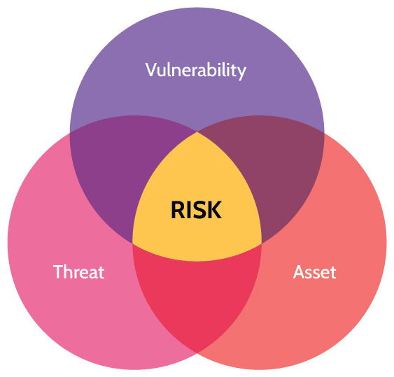
Figure 1-4: Risk Exposure
To fully understand each risk for a given asset, two additional pieces beyond threats and vulnerabilities must be considered: impact and probability. The impact is whatever negative consequences there may be to the organization if a risk occurs. Finally, the probability/likelihood is how often a given risk is expected to occur.
Figure 1-5 summarizes how these components fit together and are used to identify the risks for a given asset.
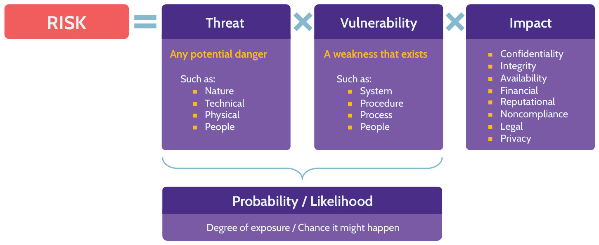
Figure 1-5: Relationship between Risk, Threat, Vulnerability, and Impact
Risk Management Terms
Table 1-20 contains a list of core terms used in risk management and how they fit together.
|
Threat Agent |
Entity that has the potential to cause damage to an asset (e.g., external attackers, internal attackers, disgruntled employees) |
|
Threat |
Any potential danger |
|
Attack |
Any harmful action that exploits a vulnerability |
|
Vulnerability |
A weakness in an asset that could be exploited by a threat |
|
Risk |
Significant exposure to a threat or vulnerability (a weakness that exists in an architecture, process, function, technology, or asset) |
|
Asset |
Anything that is valued by the organization |
|
Exposure/Impact |
Negative consequences to an asset if the risk is realized (e.g., loss of life, reputational damage, downtime, etc.) |
|
Countermeasures and Safeguards |
Controls implemented to reduce threat agents, threats, and vulnerabilities and reduce the negative impact of a risk being realized |
|
Residual Risk |
The risk that remains after countermeasures and safeguards (controls) are implemented |
Table 1-20: Risk Management Core Terms
Figure 1-6 shows how all the terms mentioned in Table 1-20 interconnect.
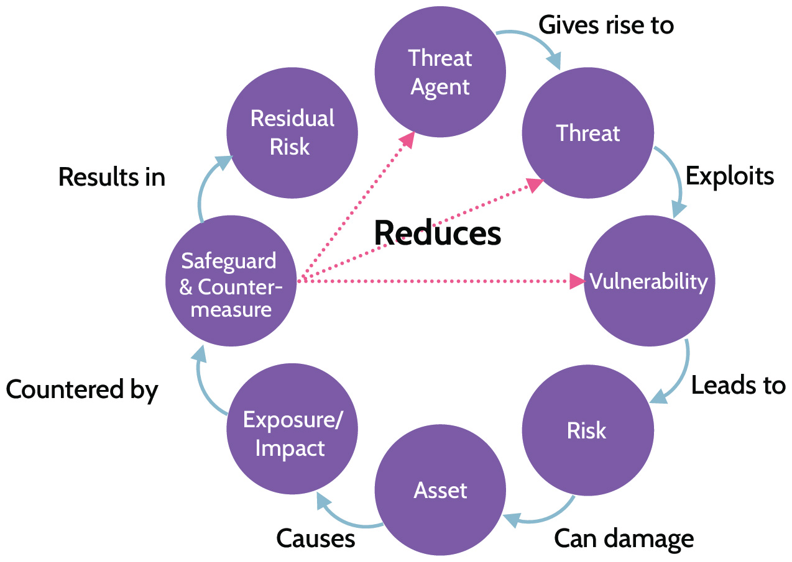
Figure 1-6: Connections Between Core Risk Management Terms
1.9.4 Annualized Loss Expectancy (ALE) Calculation
CORE CONCEPTS |
|
Definitions of ALE, SLE, AV, EF, ARO
Simple calculations using a formula to calculate SLE and ALE
In the section on asset valuation, two ranking methods were mentioned: quantitative and qualitative analysis. Quantitative analysis as part of ranking risks requires calculating how much a risk is expected to cost the organization annually-the Annualized Loss Expectancy (ALE). The ALE can be calculated using this formula:
ALE = SLE (AV x EF) x ARO
Definitions of the five components of this formula are as follows, using a CCTV system as an example throughout:
Asset Value (AV): The cost of the asset in a monetary value, e.g., a CCTV system that costs $2,000.
Exposure Factor (EF): Measured as a percentage and expresses how much of the asset's value stands to be lost in case of a risk materializing, e.g., if the voltage spikes excessively during certain periods of the year, a CCTV might lose three cameras to damage, thus costing $200. This represents 10 percent of the total cost (which is $2,000) and thus makes the EF be 10 percent. The EF will always be a percentage between 0 to 100 percent.
Single Loss Expectancy (SLE): Denotes how much it will cost if the risk occurs once. To calculate the SLE, simply multiply the AV by the EF: SLE = AV * EF, which in this example becomes $2,000 * 10 percent = $200.
Annualized Rate of Occurrence (ARO): Denotes how many times each year the risk is expected to occur. For example, if the voltage spikes excessively three times a year, the ARO is 3.
Annualized Loss Expectancy (ALE): Expresses the annual cost of the risk materializing. To calculate it, use the following formula: ALE = SLE * ARO, which in this example becomes $200 * 3 = $600.
The ALE is a very useful figure, as it shows exactly how much money a given risk is expected to cost the organization per year, and can therefore provide guidance on what controls are cost-justified and should be put in place.
It is not a good business practice to implement controls that cost more than the risk they are meant to mitigate. If the cost of a control is more than the cost of the risk, a good business decision would be to accept the risk. Owners of an asset are best positioned to make this risk acceptance decision.
While the results of the ALE calculation are extremely useful, and quantitative analysis is highly preferred over qualitative analysis, it's extremely difficult to perform this calculation. Most of the numbers you need are quite difficult to assess accurately. Figure 1-7 graphically represents the formulas for the calculations mentioned above.
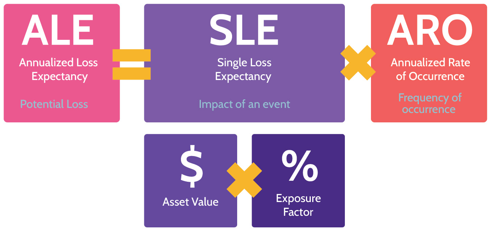
Figure 1-7: SLE and ALE Calculations
1.9.5 Risk Response/Treatment
CORE CONCEPTS |
|
|
After the risk analysis process, security should implement the most cost-effective treatments. The right approach depends on the value of the asset and type of risk identified in the previous steps. Figure 1-8 shows the four ways that risk can be managed, using a rather ridiculous diving board as an example.
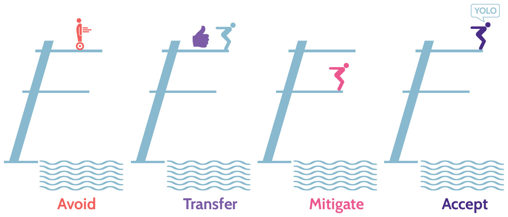
Figure 1-8: Risk Treatments
To avoid risk means to choose to stop doing whatever exposes the asset to risk. When risk is avoided, significant opportunities might also be lost-opportunity cost. In addition, it may also lead to other risks. For example, avoiding flying may lead to driving across different areas, which may have a higher risk than flying. Risk avoidance is not usually the first choice an organization makes when dealing with risk. The opportunity cost aspect is important. Organizations must always be taking a degree of risk to continue to expand, innovate, and remain relevant. If a risk is avoided, then all the potential upside of the risk is also avoided. Therefore, risk avoidance should be used very selectively.
Using our diving board example, how do we avoid the risk? Don't jump. But of course, the opportunity cost is you miss out on the fun of jumping.
To transfer risk means to share some of the risk with another party, usually an insurance company. In this case, the insurer, because of what's called a premium payment, commits to paying the organization if a risk becomes reality. However, even when risk is transferred, ultimate accountability remains with the organization. Responsibility for managing the risk can be transferred, but accountability for the consequences of failing to manage it may never be transferred.
Using our diving board example, how do we transfer the risk? Get someone else to jump, or at least ensure your life insurance policy is up to date before jumping. Companies can take out cybersecurity insurance, which is a specialized insurance product designed to help organizations protect against financial losses resulting from cyber-related incidents.
To mitigate risk means to implement controls that reduce the risk to an acceptable level. Risk can never be eliminated or reduced to zero. However, it can be reduced enough that residual risk (the risk that remains after controls have been put in place) can be accepted or transferred. Risk mitigation is where organizations typically focus most of their efforts, and types of risk mitigation controls are described in more detail below.
Using our diving board example, how do we reduce/mitigate the risk? Jump from the lower diving board.
To accept risk simply means taking no action or no further action where risk to a particular asset is concerned. This commonly happens when the cost of the control exceeds the value of the asset-the best business decision is to accept the risk. Another example of where an asset owner must accept risk is the residual risk that remains after mitigating controls have been implemented. In any case where risk is accepted, the person to make this decision should always be the asset owner or senior management-those who are accountable.
And finally using our diving board example, how do we accept the risk? Just jump. Right from the top. Who knows, you might make it!
Note that sometimes various companies choose to ignore a risk. Risk ignorance is not a viable approach to take, nor does it adhere to due care and due diligence. For example, a security analyst mentions to the Chief Security Officer that multiple servers have no AV installed, thus putting them at risk of being affected by malware. If the Chief Security Officer chooses to ignore that risk that was just highlighted, the consequences can be dire for the business and can lead to financial fines and reputational damage.
1.9.6 Applicable Types of Controls
CORE CONCEPTS |
|
|
Definitions and examples of the types of controls
Seven major types of controls can be put in place as shown in Table 1-21. Understanding these different types of controls is crucial to carrying out defense-in-depth, which is an approach to security that involves multiple layers of controls. This is also sometimes referred to as layered security.
|
Directive |
Directive controls direct, confine, or control the actions of subjects to force or encourage compliance with security policies. An example is a fire exit sign. |
|
Deterrent |
Deterrent controls discourage violation of security policies. An example is a sign warning that a piece of land is private property and trespassers will be shot. Nothing prevents someone from walking past the sign, but it's a good deterrent. |
|
Preventive |
Preventive controls can prevent undesired actions or events. For example, a fence that prevents someone from walking onto a private property. Or not having flammable materials around and therefore preventing a fire from starting. |
|
Detective |
Detective controls are designed to identify if a risk has occurred. Importantly, detective controls operate after an event has already occurred. An example is a smoke alarm detecting smoke. |
|
Corrective |
Corrective controls are used to minimize the negative impact of a risk occurring-minimize the damage. They are used to alleviate the impact of an event that has resulted in a loss and to respond to incidents in a manner that will minimize risk. An example is a fire suppression system activating. |
|
Recovery |
Recovery controls are designed to recover a system or process and return to normal operation following an incident. An example is a data backup policy allowing restoration of data on an affected server after an incident has taken place. |
|
Compensating |
Compensating controls are typically deployed in conjunction with other controls to aid in enforcement and support of the other controls. However, compensating controls can also be used in place of another control to provide the needed security. An example is deploying a Host Intrusion Prevention System (HIPS) on a critical server, in addition to having a Network Intrusion Protection System (NIPS) operating on that server's subnet. This way, if any offending traffic manages to slip by the NIPS tool, the HIPS on the server may still be able to prevent malware from damaging it. |
Table 1-21: Types of Security Controls
Remember that detective, recovery, and corrective controls are enforced after an incident is present. However, deterrent, directive, preventive, and compensating controls are applicable before an incident takes place. It is always better to stop something bad from happening than it is to deal with it after it has happened.
A concept that is pervasively used in security is a complete control. A complete control is a combination of preventive, detective, and corrective controls at a minimum. The idea being that whenever controls are implemented, ideally the possible preventive control is implemented to prevent risks from occurring, but there is no perfect preventive control, thus detective and corrective controls should also be implemented. This concept of a complete control should be used whenever controls are implemented. At a minimum, ensure that preventive, detective, and corrective controls are implemented at each layer of defense.
1.9.7 Categories of Controls
CORE CONCEPTS |
|
|
|
A way to categorize the security controls we just reviewed is as safeguards or as countermeasures.
Safeguards vs. countermeasures
Safeguards are proactive controls; they are put in place before risk has occurred to deter or prevent it from manifesting. Safeguards would be directive, deterrent, preventive, and compensating controls.
Countermeasures are reactive controls. They are put in place after risk has occurred and aim to allow us to detect and respond to it accordingly. Countermeasures would be detective, corrective, and recovery controls.
Defi nitions & examples of administrative, technical/logical, and physical controls
Controls can be further classified in three main categories:
Administrative: Policies, procedures, baselines, and guidelines are all classified as administrative controls. Items like background checks, acceptable use, network policy, onboarding/offboarding policies, and similar things fall in this category.
Logical/Technical: Firewalls, IPS/IDS, AV, antimalware, proxies, and similar tools fall under the logical/technical security controls category.
Physical: Doors, fences, gates, bollards, mantraps, guards, and CCTV fall under the physical security controls category.
Logical/technical controls are typically used synonymously, but there is an important distinction between them. Let's take a physical firewall as an example. To vastly oversimplify, a physical firewall is made up of two major components: the hardware (power supply, CPU, RAM, NICs, etc.) and the software installed and operating on the hardware. The software is the logical component, and the hardware is the technical.
Table 1-22 illustrates various control types and categories that may be implemented in an organization. Note that it isn't exhaustive but provides a good comparison of typically used controls.
|
Administrative |
Logical / Technical |
Physical |
|
Directive |
|
|
|
|
Deterrent |
|
|
|
|
Preventive |
|
|
|
|
Detective |
|
|
|
|
Corrective |
|
|
|
|
Recovery |
|
|
|
|
Compensating |
|
|
|
Table 1-22: Control Types and Categories
1.9.8 Functional and Assurance
CORE CONCEPTS |
|
|
A good security control should always include two aspects: functional aspect and assurance aspect. Figure 1-9 and Table 1-23 depict and define the functional and assurance aspects.
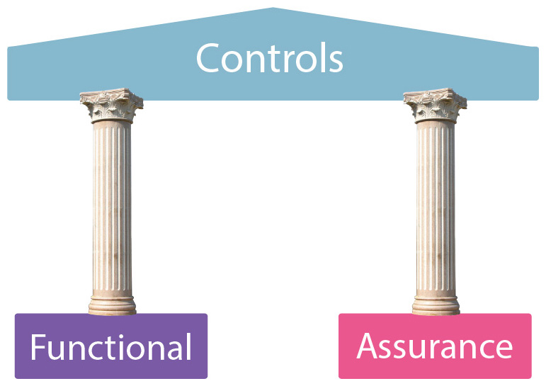
Figure 1-9: Functional and Assurance
|
Functional |
Assurance |
|
Control performs the function it was designed to address/does what it is meant to do. For example, a firewall filtering traffic between different subnets. |
Control can be proven to be functioning properly on an ongoing basis. Usually proven through testing, assessments, logging, and monitoring, etc. |
Table 1-23: Functional and Assurance
Anytime a control is implemented, it should include these two aspects. The control should perform some function (e.g., control the flow of network traffic, only allow authorized employees to enter a building, detect smoke from a fire), and there should be some means of verifying/obtaining assurance that the control is working effectively on an ongoing basis.
1.9.9 Selecting Controls
CORE CONCEPTS |
|
|
How to determine if a control should be implemented
How much security is enough?
When selecting appropriate security controls, there's a tendency to select the most expensive and top-performing solutions in an effort to provide the maximum level of security to the environment, but this doesn't necessarily make these cost-effective. Security is usually a balancing act between achieving the maximum level of security with the least amount of cost, and at the same time allowing proper functionality.
It is important to remember that implementing any security control has a negative impact on the organization. Security controls make systems more difficult to use, slower, more complicated, and so on. Security for the sake of security must be avoided.
Criteria that should be evaluated as part of deciding what controls to implement include:
Alignment to organizational goals and objectives-does a control help an organization achieve its goals and objectives, or is the control an impediment?
Cost-effectiveness-every control must be cost-justified.
Complete control-a combination of preventive, detective, and corrective controls at a minimum.
Functional and assurance effectiveness
Measuring Control Effectiveness and Reporting
Once a control, or set of controls, has been decided upon and implemented, it is important to understand how well they're working. One of the best ways to do this is using metrics. To identify the metrics that will matter, the metrics that will be useful to implement and monitor, the target audience must be identified. Further, discussion and research must be done to understand what the target audience need to know-what metrics will provide them with the information they need.
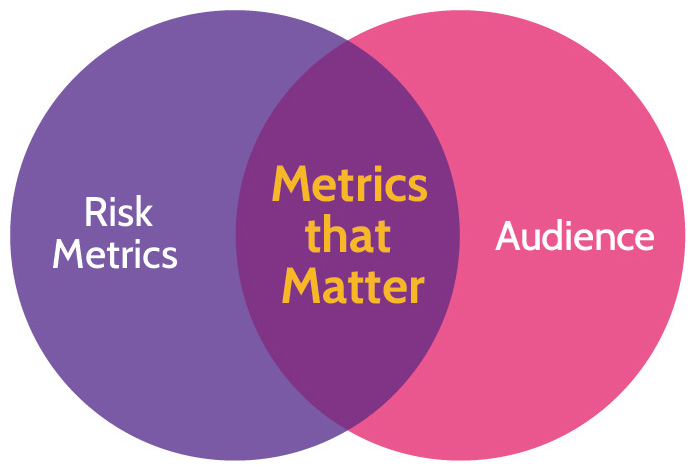
Figure 1-10: Metrics that Matter
Different metrics will be valuable to different audiences. For example, senior management will be more interested in "big picture" metrics, while the facilities operations team is more likely to be interested in more detailed metrics that apply directly to their everyday work. Metrics for control status can originate from multiple sources, such as internal monitoring, internal or external auditors, and third-party reports. In addition, the audience can vary and include management, regulators, internal teams, and customers. Figure 1-10 depicts this concept of metrics that matter-metrics that tell the intended audience what they need to know.
Continuous Improvement
The landscape covered by the risk management process is ever-changing-new assets are added, old assets are retired, new threats and vulnerabilities are identified, the impact of a risks occurring changes, etc.-thus making risk management a continuous, arduous, and time-consuming process that needs to be continually updated. The Deming Cycle, sometimes also referred to as Plan Do Check Act (PDCA), shown in Figure 1-11, outlines the cyclical nature of many processes in security, including risk management. The steps of the PDCA/Deming Cycle are defined in Table 1-24.
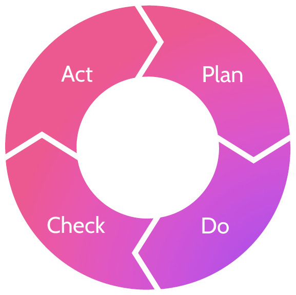
Figure 1-11: Deming Cycle
|
Plan |
Determine which controls to implement based on the risks identified |
|
Do |
Implement the controls |
|
Check |
Monitoring and assurance; are the controls operating effectively? |
|
Act |
Based upon findings during the "Check" step, take additional actions as necessary (react), which leads back to planning. |
Table 1-24: Deming Cycle Steps
Risk management, like many processes in security, must be continually updated and improved. If a new asset is acquired, should a risk analysis be performed? What if a new, significant threat is identified? What if a new vulnerability is identified? What if a new potential impact has been identified? What if new regulations or laws apply? Any and all of these things should trigger an update to an organization's risk matrix.
How often should a risk analysis be conducted?
The perfect answer: as often as necessary. The frequency of risk analysis will depend on the nature of the business and associated risks, and should also be triggered by a change in the value of an asset.
1.9.10 Risk Management Frameworks
CORE CONCEPTS |
|
Imagine you're a newly hired risk manager, tasked with creating a risk management program: identifying all the assets, risks, threats, and vulnerabilities as well as leading the process of developing all the controls. It's a huge and complicated task, and you'd probably search for advice on best practices from someone who's done it before. Frameworks provide just that. They're collections of best practices that give you step-by-step guidance on how to perform certain activities, which controls to implement, and how to implement them. Frameworks allow you to take the collected wisdom of experts and apply it to your organization. The four risk management frameworks in Table 1-25, are some examples of risk management frameworks used to address risks; NIST 800-37 is popular, so more detail on that framework is featured in Table 1-26.
|
NIST SP 800-37 (RMF) |
This guide describes the risk management framework (RMF) and provides guidelines for applying the RMF to information systems and organizations. |
|
ISO 31000 |
ISO 31000 is a family of standards relating to risk management. The scope of ISO 31000 is to provide best practice structure and guidance to all organizations concerned with risk management. |
|
COSO |
COSO provides a definition to essential enterprise risk management components, reviews ERM principles and concepts, and provides direction and guidance for enterprise risk management. |
|
ISACA Risk IT Framework |
ISACA's Risk IT Framework contains guidelines and practices for risk optimization, security, and business value. The latest version places greater emphasis on cybersecurity and aligns with the latest version of COBIT. |
Table 1-25: Common Risk Management Frameworks
NIST SP 800-37 Rev. 2
Though variations of the RMF exist, for purposes of the CISSP exam, NIST SP 800-37 Rev. 2 should be your focus. Understanding the RMF is critical, as it informs and underpins just about every facet of operational security governance within an organization. Table 1-26 lists the seven steps of SP 800-37 Rev. 2.
Steps in the NIST SP 800-37 Risk Management Framework (RMF)
|
1 |
Prepare to execute the RMF |
|
2 |
Categorize Information Systems In this step, information systems are identified and categorized. It includes questions like "What do we have?"; "How does this system, its subsystems, and its boundaries fit into our organization's business processes?"; "How sensitive is it?"; "Who owns it and the data within it?" The purpose of this step is to determine any potential adverse impacts to the confidentiality, integrity, and availability of organizational operations and assets, thereby informing the organizational risk management process. |
|
3 |
Select Security Controls After a risk assessment has been conducted, select, tailor, and document security controls necessary to protect the information systems. Security controls are management, operational, and technical safeguards or countermeasures embedded into information systems. They protect the confidentiality, integrity, and availability of those systems and the information contained therein; assurance provides evidence that the security controls within an information system are effective. |
|
4 |
Implement Security Controls Activities at this step are based entirely on the controls selected in Step 3 and involve two key tasks: 1) implementing the selected controls in the security and privacy plans and 2) documenting the specific, baseline details of the control implementation. This latter task is critical and allows everybody to understand what controls exist and to understand the controls in the context of the larger operational framework of the organization. |
|
5 |
Assess Security Controls Activities during this step help determine if the security controls are implemented correctly, operating as intended, and meeting the security and privacy requirements for the system and the organization. This step involves formulation of a comprehensive plan that must be reviewed and approved. |
|
6 |
Authorize Information System This step requires senior management to decide whether it's acceptable to operate the system in question, given the potential risk, controls, and residual risk. In addition to determining if the risk exposure is acceptable, Senior Management should review the plan of action related to remaining weaknesses and deficiencies-the residual risk. Finally, this authorization or approval is usually given for a set period of time that is often tied to milestones in the Plan of Actions & Milestones (POA&M), which facilitates tracking and status of failed controls. |
|
7 |
Monitor Security Controls Continuous monitoring of programs allows an organization to maintain the security of an information system over time, adapting to changing threats, vulnerabilities, technologies, and mission/business processes. Milestones from the Authorize step are a key component of the Monitor step, which can also be considered the "continuous improvement" stage. During the Monitor step, questions like "Are the controls still effective?" and "Have new vulnerabilities developed?" are examined. Risk management can become near real-time using automated tools, although automated tools are not required. This helps with configuration drift and other potential security incidents associated with unexpected change on different core components and their configurations. |
Table 1-26: NIST SP 800-37 Rev. 2 Steps
1.10 Understand and apply threat modeling concepts and methodologies
Threat Modeling Methodologies
CORE CONCEPTS |
|
Purpose of threat modeling
In order to perform proper risk management, it is important to identify the threats and vulnerabilities associated with each asset. Threat modeling methodologies aid in systematically identifying threats and their severity, which in turn makes risk management more accurate and effective. Figure 1-12 depicts how threat modeling fits in with overall risk analysis.
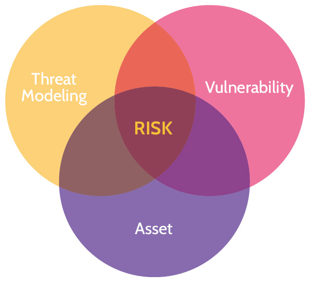
Figure 1-12: Purpose of Threat Modeling
Identifying all the threats to a complex asset, like a mobile phone, server, application, network, architecture, function, or process, can be a daunting task. So many possible threats exist, and it can be difficult to decide where to start and how to proceed to ensure a systematic identification and prioritization of threats. This is where threat modeling methodologies can help. They enable: the systematic identification, enumeration, and prioritization of threats related to an asset.
Numerous threat modeling methodologies exist, and the primary goal of most is to provide a systematic and deliberate means of identifying and categorizing threats to a given asset. Three of the major threat modeling methodologies you need to know about for the exam are STRIDE, PASTA and DREAD.
STRIDE
STRIDE was developed by Microsoft. Though it was initially developed as a means of assessing threats to applications and operating systems, it can be used in other contexts too. STRIDE is a threat-focused methodology that's less strategic and thorough than PASTA. STRIDE is an acronym as described in Table 1-27.
STRIDE vs. PASTA
|
Threat |
Violation |
Definition |
|
|
S |
Spoofing |
Authentication |
An attacker pretends to be something or someone to gain unauthorized access |
|
T |
Tampering |
Integrity |
An attacker modifies data at rest (e.g., in a database) or in transit (e.g., over the network) |
|
R |
Repudiation |
Nonrepudiation |
An attacker performs an action on a system that is not attributable to them |
|
I |
Information Disclosure |
Confidentiality |
An attacker can read sensitive information |
|
D |
Denial of Service |
Availability |
An attacker prevents legitimate users from accessing an application/service |
|
E |
Elevation of Privilege |
Authorization |
An attacker gains elevated access rights (e.g., administrative/root access) |
Table 1-27: STRIDE Model
PASTA
Process for Attack Simulation and Threat Analysis (PASTA), contrary to STRIDE, is an attacker-focused, risk-centric methodology. It is much more detailed than STRIDE and performs threat analysis from a strategic perspective that includes input from governance, operations, architecture, and development. This is done from both business and technical viewpoints.
Stages in PASTA
PASTA is a seven-stage threat modeling methodology, and each stage focuses on a specific set of goals and deliverables that must be achieved as seen in Table 1-28:
|
1 |
Define Objectives-This considers the inherent application risk profile and addresses other business impact considerations early. |
|
2 |
Define Technical Scope-The philosophy behind this stage is that you can't protect what you don't know. It's intended to decompose the technology stack that supports the application components that realize the business objectives identified from Stage 1. |
|
3 |
Application Decomposition-This stage focuses on understanding the data flows among application components and services in the application threat model. |
|
4 |
Threat Analysis-Reviews threat assertions from data within the environment as well as industry threat intelligence that is relevant to service, data, and deployment model. |
|
5 |
Vulnerability and Weakness Analysis-Identifies the vulnerabilities and weaknesses within the application design and code and correlates to see if it supports the threat assertions from the prior stage. |
|
6 |
Attack Modeling-This stage focuses on emulating attacks that could exploit identified weaknesses/vulnerabilities from the prior stage. It helps to also determine the threat viability via attack patterns. |
|
7 |
Risk and Impact Analysis-This stage centers around remediating vulnerabilities or weaknesses in code or design that can facilitate threats and underlying attack patterns. It may warrant some risk acceptance by broader application owners or development managers. |
Table 1-28: PASTA Stages
DREAD
DREAD is a threat model primarily used to measure and rank the severity of threats. DREAD is often used in combination with the STRIDE model, where STRIDE identifies the threats, and DREAD is then used to rank the severity of threats. Five key points are considered and a score for each is determined between 1 and 10 (1 being low-risk, and 10 being high-risk). The score from each of the five key points is then tallied up and divided by five to produce a final score out of ten. This final score is then used to understand the severity of a threat. DREAD is an acronym as described in Table 1-29.
|
Key Point |
Definition |
Score |
|
|
D |
Damage |
Total amount of damage the threat can cause? |
1-10 |
|
R |
Reproducibility |
How easily can the threat be replicated? |
1-10 |
|
E |
Exploitability |
How difficult is it to exploit the threat? |
1-10 |
|
A |
Affected Users |
How many people, inside or outside the organization, will be affected by the threat? |
1-10 |
|
D |
Discoverability |
How easily can the threat be discovered? |
1-10 |
Table 1-29: DREAD Model
Social Engineering
CORE CONCEPTS |
|
|
|
Social engineering can be defined as using deception or intimidation to get people to provide sensitive information that they shouldn't in order to facilitate fraudulent activities.
In most organizations, the biggest security weakness exists between the keyboard and the back of the chair: employees. The way attackers persuade employees to do things they shouldn't do is through the use of social engineering techniques. Social engineering is a very prevalent form of attack that exploits the inherent kindness and emotions of people. It is so prevalent, because it's so effective.
Definitions of social engineering, phishing, vishing, and smishing
Common social engineering tactics include intimidation (involves inducing fear in order to manipulate someone into a specific course of action), deception (involves tricking someone in one manner or another), and rapport (building a gradual relationship with a victim in order to take advantage of it down the line).
An example of intimidation is blackmail, while lying is one of deception, and pretending to be from the IT team and wanting to help is an example of rapport.
Table 1-30 shows some common forms of social engineering attacks.
|
Phishing |
Phishing is where an attacker sends many emails with the hope that the target will open an email and click on a link or open a file that leads to a malicious action. |
|
Spear Phishing |
Spear phishing is a targeted form of phishing that typically focuses on certain individuals or groups of individuals. Through a bit of discovery, the attacker determines what might prompt the targeted individual(s) to click on a link in an email, and the hook is then baited. A classic example is an attacker sending a malicious PDF posing as an invoice to the accounts payable team. |
|
Whaling |
Like spear phishing, this is also an email attack and targets the big fish-the whales-in an organization. Typically, people like the CEO, COO, and CFO are the targets of a whaling attack. |
|
Smishing |
Smishing is a form of phishing that targets mobile phone users. Typically, an attacker purporting to be from a legitimate company sends a fraudulent text/SMS message to a potential victim, with the hope that the target will click a link in the message. Smishing attacks can be simple, with the hope that a victim will click on a link and then reveal sensitive information, or they can be sophisticated and allow the attacker to control the victim's phone and thereby gain access to bank accounts, corporate resources, and other sensitive material. |
|
Vishing |
Vishing is another form of phishing, and the name refers to the way it is typically presented to a potential victim-via voice over IP (VoIP) phone systems (though attacks can take place over mobile phones, landlines, or voice mail). |
|
Pretexting |
Pretexting involves the attacker creating a scenario, almost like a script, that very ingeniously and subtly spurs the victim into action. Usually, the pretext will strike an emotional chord-whether it's your "bank" calling with news about suspicious activity related to your account, or a "friend" texting you with news about an unfortunate incident that's left them stranded someplace. Ultimately, a request is made for money, sensitive information, or both. |
|
Baiting |
Baiting is a form of social engineering that preys on people's curiosity via the use of physical tools, like USB drives. Usually, the attacker will drop some USB drives in a building parking lot, a hallway, a convention hall, or other crowded area. Then, some employees, hotel guests, or convention attendees will find the device and plug it in to their computer to try and identify the owner and return it. |
|
Tailgating and Piggybacking |
Tailgating or piggybacking is the action of following a person who is authorized to enter a restricted area through a door and thus gaining unauthorized access. The difference is that in tailgating the attacker possesses a badge that is fake but looks real. In piggybacking, the attacker doesn't have any badge at all. |
Table 1-30: Social Engineering Attacks
Mitigating most social engineering attacks can be done most effectively through awareness, training, and education. Strong security policies can also help in this regard. Additionally, there are practical steps that can and should be taken to prevent some of the attacks noted above. Some of the best steps include:
Requesting proof of identity
Requiring callback authorization for voice- or text-only requests for network alterations, sensitive information, etc.
When sensitive information is being requested via email by a purported well-known entity, like a bank, contacting them "out-of-band." In other words, not contacting the entity via any numbers in the email but rather contact them via the entity's website or another confirmed source. Also, not reaching out using random telephone numbers but only valid landline numbers that belong to the legitimate organization in question and can be easily found online.
1.11 Apply supply chain risk management (SCRM) concepts
CORE CONCEPTS |
|
Risk management should also apply to your organization's suppliers and service providers. For example, if an organization is moving to the cloud, that should be factored as an inherent risk into their risk management process. Even though a cloud service provider is responsible for storing data, owners are still accountable for that data. If the organization needs to be compliant with certain laws and regulations, the organization must ensure that their cloud service provider has the required controls in place to meet the organization's compliance requirements. Every organization has security dependencies with external entities-vendors, suppliers, customers, contractors-and risk management should apply to all of them, while including the following items:
Governance review
Site security review
Formal security audit
Penetration testing
Adherence to security baseline
Evaluation of hardware and software
Adherence to security policies
Development of an assessment plan
Identification of assessment requirements and which party will perform it
Preparation of assessment and reporting templates
In short, owners need to define requirements for suppliers and communicate those requirements to all external suppliers, just as they should do for their processes. Vendors and suppliers perform a significant number of services for many organizations, and this fact should drive external risk analysis as much as internal risk analysis. An organization must be aware of and apply the same risk management process to its suppliers because accountability can't be outsourced. Supply chain risk analysis is as vital and important as any other type of risk analysis.
1.11.1 Risks associated with the acquisition of products and services from suppliers and providers
Table 1.31 discusses the main risks that should be considered when acquiring products and services.
|
Product Tampering |
Unauthorized alteration or modification of a product after manufacturing, but before the product reaches the consumer. As an example, an attacker could intercept a keyboard delivery, solder a keylogger inside it, and then repackage it. The customer would have no idea that the keyboard had been tampered with. Product tampering can result in malfunctions, health hazards, the compromise of integrity, or the introduction of malicious code and vulnerabilities. |
|
Counterfeits |
Unauthorized replicas or imitations of products that are made to deceive consumers into thinking that they are purchasing the real thing. Counterfeits may result in reduced performance, hazards, regulatory violations, inappropriate security, or increased vulnerabilities. |
|
Implants |
Hardware or software components stealthily inserted into products to perform unauthorized activities, such as espionage or data theft. Implants can result in sensitive information being sent to unauthorized entities and unauthorized access to systems. They may grant attackers access for extended periods of time. |
Table 1.31: Product Tampering, Counterfeits, and Implants
1.11.2 Risk Mitigations
Table 1.32 discusses various supply chain risk mitigations.
|
Third-party Assessment and Monitoring |
Evaluating and continuously monitoring the security practices and performance of third-party vendors or suppliers. |
|
Minimum Security Requirements |
Predefined baseline security standards that vendors must meet. |
|
Service-level Requirements |
Specifications set in contracts that dictate the expected performance, availability, and responsiveness of a service provided by a vendor. |
|
Silicon Root of Trust |
A secure cryptographic identity embedded in hardware, ensuring that the hardware starts in a trusted state and that the firmware loaded onto it is genuine. Having the cryptographic identity embedded in the hardware allows us to have a secure boot process. |
|
Physically Unclonable Function |
A hardware feature that uses the unique physical characteristics of semiconductor devices to generate cryptographic keys, ensuring that each device has a unique and unclonable identity. This mitigates the risk of counterfeits. |
|
Software Bill of Materials |
A comprehensive list of components, libraries and modules that are used to build a software product, often detailing versions, sources and dependencies. With this list, we can check what changes have been made in new versions. This can help us detect things like backdoors and other vulnerabilities. |
Table 1.32: Supply Chain Risk Mitigations
SLR, SLA, and Service Level Reports
CORE CONCEPTS |
|
|
|
|
Security's involvement in procurement
SLAs
Why security metrics are used
Acquisitions are usually made with the goal of adding value to an organization; but they often come with inherent risks, because a product or service from the outside world is being introduced to the organization. Even if the acquisition is of a well-known brand, product, or service, risks exist and must be evaluated as part of the acquisition, or procurement, process. This evaluation should take place as early as possible and include security considerations that minimize the risk that new acquisitions introduce to an organization. Section 1.11 touched on the importance of conducting risk management for suppliers, and this section will provide more detail on exactly how to do it.
When an organization looks to acquire a new asset or service, any relevant security requirements must be identified and considered. Security needs to work with the owner to understand the business rationale for acquiring a new asset or service. If security does not understand how the asset will be used, who will access it, and what types of data the asset will store or be transmitted to a service provider, there is no way the right security controls can be identified and evaluated as part of the procurement process.
After business requirements have been identified, they must be validated (confirmed), so the security requirements can be defined. The security requirements are documented in a service level requirements (SLR) document (explained in more detail below). The SLR document is used as part of the procurement process to help the organization evaluate different vendors and/or products against the documented security requirements. For example, a company employing a new credit card processing system might require that the system be PCI compliant; or if they're a health care provider, they might require that a service provider be HIPAA compliant.
Once an organization chooses a vendor or service provider, the requirements in the SLR should be included in the contract with the vendor, with stipulations about how the vendor will continue to meet the requirements on an ongoing basis. These stipulations usually take the form of a contract addendum known as the service level agreement (SLA), also explained below.
Service Level Requirements (SLR)
With the acquisition of a service, additional organizational requirements must be considered, and this is done through a document called an SLR. Specifically, an SLR outlines:
Detailed service descriptions
Detailed service level targets
Mutual responsibilities
The SLR is a very important document during the procurement process, as it defines the security services and service level targets that each potential supplier can be evaluated against. When a winning supplier is selected in the procurement process, the SLR will then be used to inform the requirements that will be documented in the SLA.
Service Level Agreement (SLA)
One important note: even though the agreement is between a service provider and a customer, the customer remains accountable for all customer data being processed by the provider. SLAs are addendums to the contract and are therefore enforceable. SLAs often include expectations and stipulations related to:
Service Levels (performance levels)
Governance-the customer and the service provider know who is responsible for what
Security-expected security controls put in place by the service provider that speak to the topic of accountability and responsibility. Accountability can never be outsourced; thus, the security controls needed to protect customer data must be very clearly defined by the customer and put in place to exact specifications by the service provider.
Compliance with all laws and regulations that relate to the customer's industry or where the customer conducts business
Liability/Indemnification when any element of the SLA is not met or is below threshold standards
To understand how a service provider is performing on behalf of a customer, and particularly to identify how well expectations defined in the SLA are being met, a service provider will provide service level reports on an ongoing basis.
Service Level Reports
Service level reports are issued by a vendor or service provider to a client and provide insight and information about the service provider's ability to deliver services as defined by the SLA. The service level report compares anticipated and agreed upon service levels with actual service levels and documents the effectiveness of security controls, which allows the customer-the owner-to gain assurance that expectations are being met.
A service level report might contain any of the following components:
Achievement of metrics defined in the SLA
Identification of issues
Reporting channels
Management
Third-party SOC reports, which provide independent verification and assurance that the terms of the SLA are being met
There are cases, for example, when considering the acquisition of a cloud-based service, that the acquiring company will not be able to evaluate all facets of the service provider's offering or when a customer wants an outside company to evaluate whether the terms of an SLA are being met. In these situations, third-party assessment and monitoring tools and services can be utilized for the same purposes. Thus, even though a service provider may not allow an organization's auditors onsite to perform an audit, the potential customer can rely on the audit report (usually in the form of a SOC 2, Type 2 report) from a trusted third-party audit firm. This is known as third-party assurance, and it will be discussed in more detail in section 6.5.2.
1.12 Establish and maintain a security awareness, education, and training program
1.12.1 Methods and Techniques to Increase Awareness, Training, and Education
CORE CONCEPTS |
|
|
|
|
Who is responsible for security?
EVERYONE in an organization is responsible for security. However, it's not nearly sufficient to simply say, "Everyone is responsible for security." Employees must understand and know how to execute their security responsibilities. This implies that organizations must provide awareness, training, and education so that everyone knows and understands their security responsibilities.
Purpose of security awareness training
Awareness within an organization is fostered with the goal of creating cultural sensitivity to a given topic or issue. Awareness is usually done at an organization-wide level and is designed to get every employee on the same page, so they're all doing things related to security in a similar manner. Examples of awareness include internal phishing campaigns, lunch and learns, and awareness posters hung in visible places.
Definition of awareness
Training provides specific skills needed to perform tasks related to security. It often focuses on the technical aspects of a role. Examples of training might include a firewall administrator learning how to write firewall rules or a security guard learning how to respond to different situations related to protecting a building and the assets within.
Finally, education helps people understand fundamental concepts and therefore develop decision-making skills and abilities. Table 1-33 contains a comparison between these three.
|
Awareness |
Training |
Education |
|
|
|
|
Table 1-33: Awareness, Training, and Education Comparison
Methods and Techniques to Provide Awareness and Training (e.g., social engineering, phishing, security champions, gamification)
The key to engaging awareness, training, and education is to be creative and to use methods that effectively convey the message. Additionally, it's important to speak the audience's language; to talk in terms that will best resonate. In other words, the language used when speaking to members of upper management will be very different from the language used when speaking to members of the IT staff.
Common methods to accomplish this task include:
Live in-person sessions.
Live online sessions.
Pre-recorded sessions.
Requirements/rewards or gamification
Establish security champions, which are employees who promote security awareness and security issues among their colleagues. A good example is a developer who engages with the security team.
Regular communications/campaigns.
Prioritization of Topics
There is never enough time to train everyone on everything, so topics selected for awareness, training, and education should directly align with the organization's goals and objectives. A good source to aid in the identification of topics is the organization's risk register. Risk management identifies the most valuable assets and their associated risks that should help drive awareness, training, and education initiatives.
1.12.2 Periodic content reviews to include emerging technologies and trends
Organizations and the surrounding threat landscape are constantly changing; therefore, awareness, training and education programs and materials should also evolve and be updated accordingly to be most effective. Technologies like blockchain (and the cryptocurrencies built on top of them) and AI have gained increasing prominence in recent years. However, changes may extend beyond the latest technology trends. Organizations should consider all changes to their threat environment when performing periodic content reviews. This helps to ensure that training, awareness and education materials are up-to-date and ready to prepare employees to tackle the latest security challenges and threats.
Metrics to measure effectiveness of a security awareness and training program
1.12.3 Program Effectiveness Evaluation
Speaking of effectiveness, program participants should be surveyed from time to time, and knowledge should be assessed via items like simulated phishing exercises or interactive multimedia presentations that include short quizzes.
Some key metrics that can be used to track effectiveness can be:
Total number of people completing the awareness program
Number of people providing feedback in comparison to total attendees
Number of people reporting suspicious activities after training completion
Tracking of how well staff members performed. For example, assuming a passing score of 75 percent:
Percentage passing with a score of 75 to 85 percent
Percentage passing with a score of 86 to 90 percent
Percentage passing with a score of 91 percent and above
Total number of attempts the course was taken by each person
 MINDMAP REVIEW VIDEOS
MINDMAP REVIEW VIDEOS
 CISSP PRACTICE QUESTION APP
CISSP PRACTICE QUESTION APP
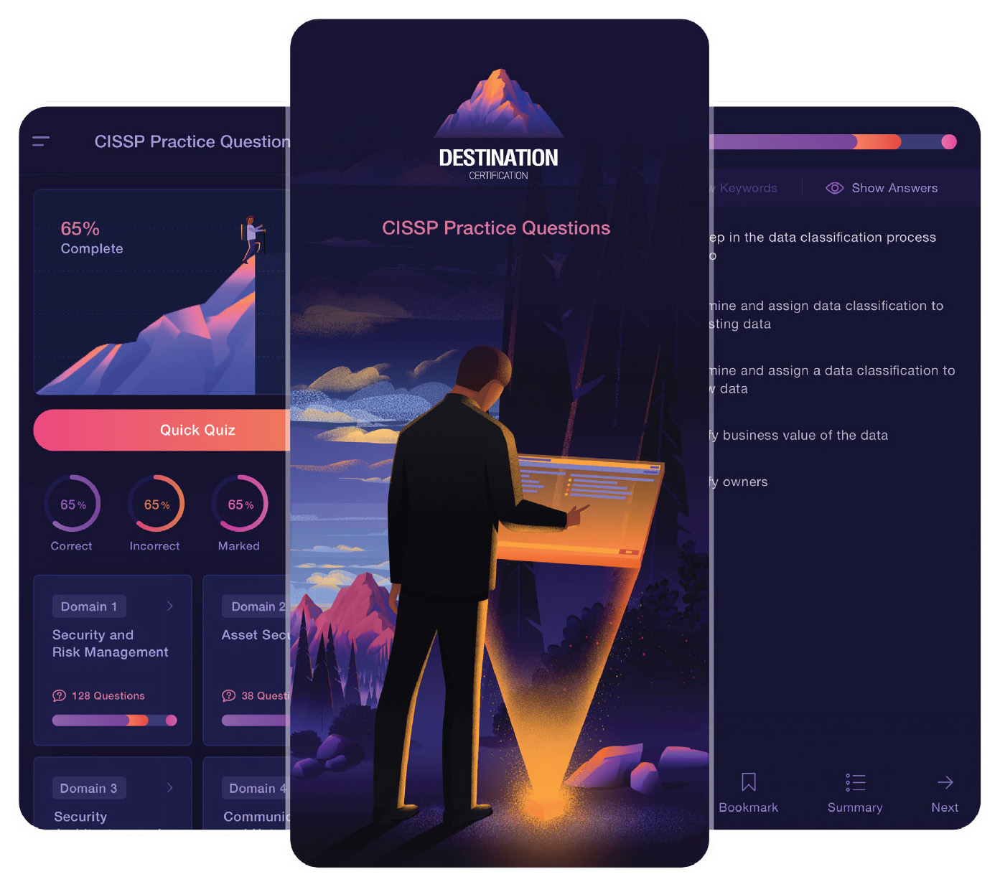
Download the Destination CISSP Practice Question app for Domain 1 practice questions